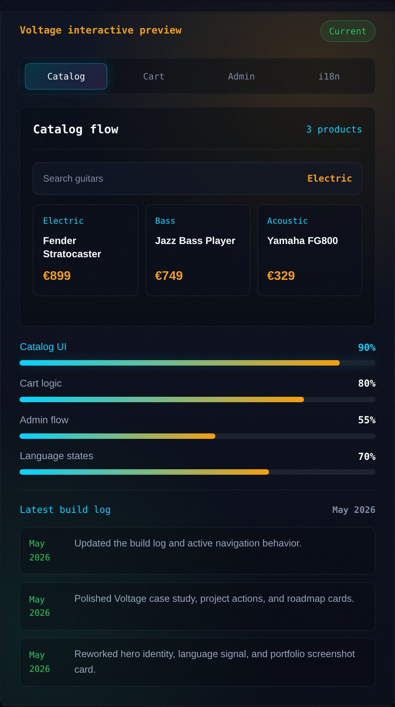
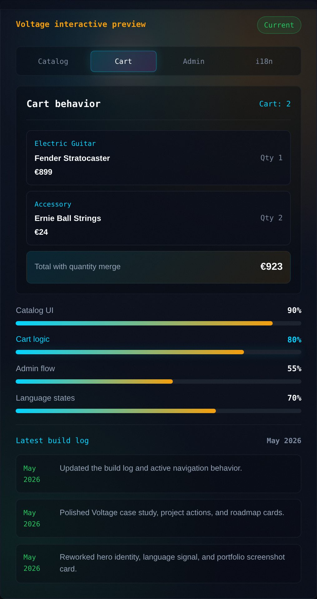

Voltage: from practice project to store flow
Voltage is currently in rebuild. The work focuses on product browsing, cart state, admin surfaces, order signals, and EN/RU/UA/DE interface pressure.


These are states of a working UI mock, not the full store — final screenshots land after the rebuild stabilizes.
Mark the current state clearly
The project needs realistic state: products, cart merging, admin views, order states, and longer translated labels.
Stabilize behavior before framework polish
Core interactions stay in vanilla JavaScript while the UI patterns mature. React can come later, after the flows deserve reusable components.
Show what is ready and what is next
The case explains what is ready, what is rebuilding, and why the live store link waits until the flow is stable.
Next build pass
- Finish cart quantity and feedback states.
- Build admin overview with order and stock signals.
- Stress test German labels on product and checkout UI.
- Add final Voltage screenshots after the rebuild stabilizes.